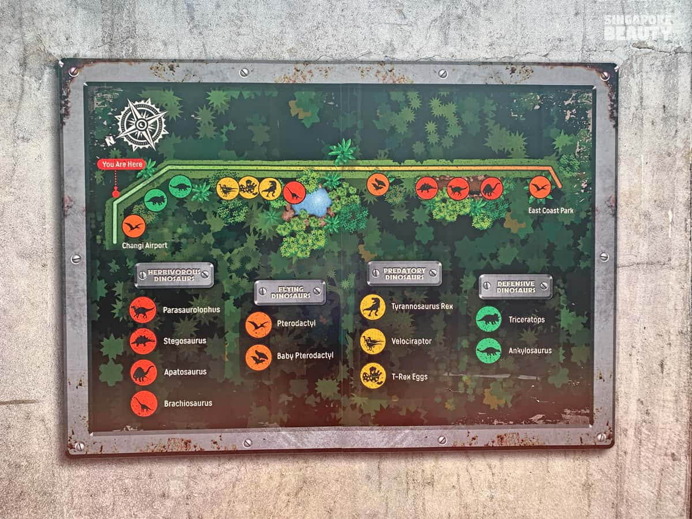

Come visit the Dinosaurs!
How would you like to visit the dinosaurs...
FOR FREE?

What We Are
Know More About Us
"Jurassic Mile is Singapore’s newest and largest permanent outdoor display of life-sized dinosaurs. More than 20 different pre-historic creatures from nine different species stretch over 1-kilometre of the cycling and jogging path. Expect to see carnivorous and herbivorous species, defensive dinosaurs, as well as those that fly. The tallest dinosaur stands at almost 5 meters high!
From a towering Tyrannosaurus Rex to gigantic dinosaur eggs, visitors will be wowed by the lifelike dinosaur exhibits at the Changi Jurassic Mile, making it a perfect outdoor weekend destination for families and friends.
Meet The Dinosaurs

Figure 1. Come face to face with the largest dinosaur!

Figure 2. Ever seen a glowing dinosaur?
Back to Top
Where We Are
By private transport
You may drop off at the Terminal 4 Arrival Pick up point or park at Car park 4A and follow the signs to Jurassic Mile. Alternatively, park at Hub & Spoke Car Park at Terminal 2 and take a 2km walk or cycle to Jurassic Mile. Bicycles can be rented from the HUB & SPOKE pit stop opposite the Hub & Spoke Car Park.
By public bus
You may drop off at the Terminal 4 bus stop and follow the signs to Jurassic Mile.
By MRT
Alight at Changi Airport MRT Station and follow on-ground signs towards Terminal 2, then onwards to HUB & SPOKE.
You may then take a 2km walk or cycle to Jurassic Mile. Bicycles can be rented from the HUB & SPOKE pit stop outside Terminal 2.
By Foot/Cycle
Walk, jog, or cycle in from East Coast Park. Whilst at East Coast Park, proceed eastwards towards the National Service Resort & Country Club (NSRCC) and the MOE Changi Coast Outdoor Adventure Learning Centre (MOE OALC). Upon passing MOE OALC entrance, you will see on-ground signs towards Jurassic Mile.

Figure 3. The Map of Jurassic Mile.
Back to Top
What To Do
Walking
Enjoy a leisurely 1km walk with family and friends. Just walk. Don't worry. The dinosaurs are behind fences. Have you watched Jurassic Park before? No? Good. Don't worry about it!
Figure 4. Walking only ONE kilometre! ;)
Cycling
For the more adventurous at heart, zoom down the Mile on bicycles. Can you cycle faster than a dinosaur?

Figure 5. Individuals cycling along Jurassic Mile.
Eating
And to end the day off, fill your stomachs with the nearby Hub&Spoke cafe.
Figure 6. Nothing beats a cool drink after running away from dinosaurs!
Back to Top
All information on this site is taken from
Changi Airport's official webpage.